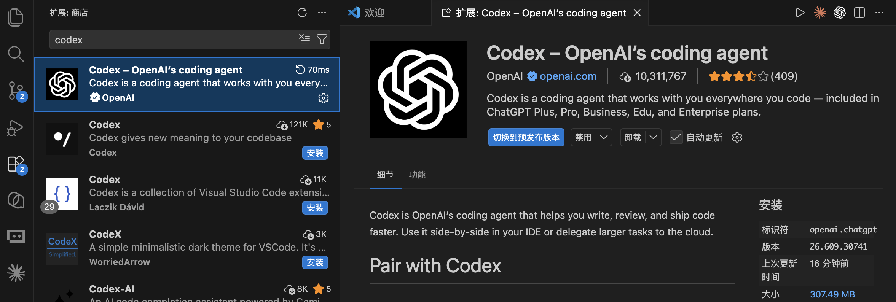
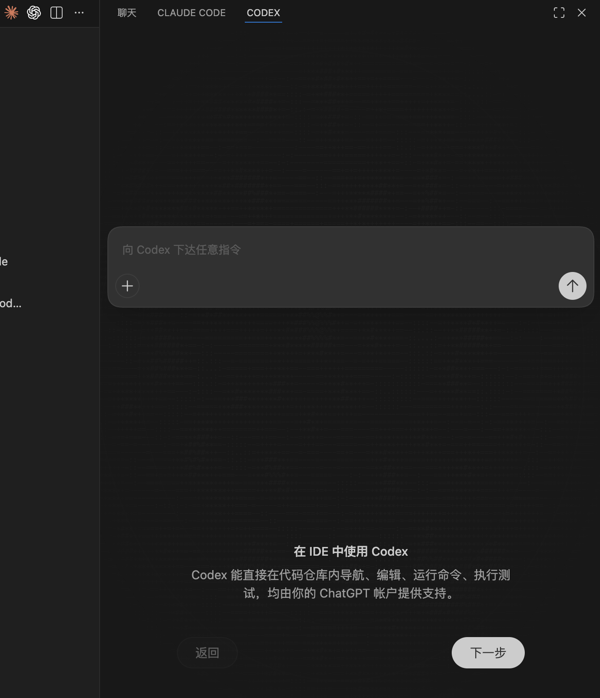

📚 系列导航：上一篇 08 命令行 CLI 上手 带你在终端里把
codex敲熟了。这一篇把 Codex 搬进 VS Code——同一个代理、同一份配置，换成有图形界面、能并排看 diff 的玩法。下一篇 10 云端 Codex Cloud 再把活儿外包到云上跑。
先还原一段我上个月跟同事的真实对话。
同事：「我在 VS Code 里搜
Codex，咋一个官方的都搜不到？跳出来一堆名字带 codex 的小插件。」 我：「你搜错关键词了，官方扩展不叫 Codex，它的 ID 是openai.chatgpt。」 同事：「啥？OpenAI 把 Codex 的扩展叫 ChatGPT？这谁猜得到。」 我：「就这一个名字，我也卡过五分钟。认 publisher 是 OpenAI 的那条，装就对了。」
说白了，Codex 的 IDE 扩展第一道坎不在用，在「找对它」——名字反直觉、Cursor 里默认还藏在折叠的扩展栏里。这篇把这些反直觉的点提前给你标出来，再把图形界面相比 CLI 真正爽的那几样讲透。
看完这一篇，你会拿到：
- 在 VS Code / Cursor / Windsurf 里装上 Codex 扩展的完整步骤，外加「搜不到 / 图标找不到」的排查清单
- 编辑器上下文（
@file、选中代码自动喂）、三档审批模式（approval mode）、模型与思考深度切换这几个图形界面爽点怎么用 - 一张「扩展 vs CLI vs 桌面 App 该用哪个」的对照表，外加扩展独有的斜杠命令和可自定义的快捷键
01 先搞清楚：扩展、CLI、桌面 App 是什么关系
「我前面已经会用终端里的 codex、桌面 App 也装了，还要不要再来个扩展？」先给结论：扩展不是第四个新工具，它就是把 Codex CLI 套了一层编辑器界面。官方说得很直白——IDE 扩展「用的是和 Codex CLI 同一个代理，共享同一份配置」。你在 ~/.codex/config.toml 里调好的模型、沙箱、审批策略，扩展全部照单继承；你在 CLI 里登录、写的 AGENTS.md，扩展这边一样认。
类比：同一辆车，方向盘和遥控器两套操控。 CLI 是你坐进驾驶座握方向盘——直接、全功能、什么挡都能挂；扩展是配套的遥控器，让你不用钻进驾驶座，在编辑器里点几下就把车开起来，还能在大屏上实时看车况（并排 diff）。发动机、油箱、行车记录是同一套——你换哪个操控，车还是那辆车。桌面 App（前面 03、07 篇讲过）则是同款车的另一个独立外壳，适合不想碰编辑器、要多任务并排盯的人。
那到底什么时候用哪个？我用下来的判断，整理成一张表：
| 场景 | CLI（终端） | IDE 扩展 | 桌面 App |
|---|---|---|---|
| 平时就泡在 VS Code / Cursor 里写代码 | 凑合 | ✅ 最顺，代码上下文开箱即喂 | 要切窗口 |
| 写脚本、批量自动化、SSH 上服务器干活 | ✅ 唯一选择 | ❌ | ❌ |
| 不想碰命令行、要多任务并排盯 | ❌ 劝退 | 一般 | ✅ 最舒服 |
| 看改动 diff、选中某段代码直接问 | 文本 diff，将就 | ✅ 原生并排 diff | ✅ 可视化 |
| 想用扩展里没有的全部 CLI 能力 | ✅ 全 | 在内置终端跑 codex 即可 |
— |
一句话：写代码、审改动这类「跟文件打交道」的活，扩展明显更顺手；要批量跑命令或用扩展面板里没暴露的功能，直接在编辑器的集成终端敲 codex——它和扩展共享同一份配置和登录，无缝切。
💡 一句话总结：扩展、CLI、桌面 App 是同一个 Codex 的三张脸，共享配置和登录、按手头的活随时切，不用纠结二选一。
02 安装：认准 openai.chatgpt，外加 Cursor 的「图标藏起来」坑
支持哪些编辑器、哪些系统
官方明确：Codex IDE 扩展支持 VS Code 及其分支 Cursor、Windsurf（还有 VS Code Insiders），JetBrains 全家桶（IntelliJ、PyCharm、WebStorm、Rider 等）走的是另一个独立的 JetBrains 集成。系统层面 macOS、Windows、Linux 全支持；Windows 上既能用原生 Windows 沙箱直接跑，也能在需要 Linux 环境时切到 WSL2（细节见官方 Windows 指南）。
国内提示：装扩展、用 ChatGPT 账号登录、之后让 Codex 干活都要连 OpenAI 服务，全程需要魔法上网，和终端版一致。
三种安装方式
方式一：扩展市场搜（最稳，但要搜对名字）
在编辑器里按 Cmd+Shift+X（Mac）或 Ctrl+Shift+X（Windows / Linux）打开扩展视图。这里是全篇第一个坑：很多人顺手搜 Codex，结果跳出一堆第三方小插件，就是不见官方那条。原因是——官方扩展的 ID 是 openai.chatgpt，发布者（publisher）是 OpenAI。搜 Codex 或 ChatGPT 都行，但认准发布者是 OpenAI 的那条再点安装，别装成仿冒的。
比如 VS Code 中搜 codex：

方式二：点链接直装
开着编辑器时，点对应链接会直接跳到安装页：
VS Code : vscode:extension/openai.chatgpt
Cursor : cursor:extension/openai.chatgpt
Windsurf : windsurf:extension/openai.chatgpt
方式三：命令行装（最快）
如果 code / cursor 命令行工具已经装好，一行搞定：
code --install-extension openai.chatgpt
Cursor 把 code 换成 cursor 即可。预期输出类似：
Installing extensions...
Extension 'openai.chatgpt' was successfully installed.
⚠️ 上面那行扩展 ID
openai.chatgpt是官方写明的；这条安装命令我对照过官方仓库，ID 一致，可放心用。
装完图标找不到？分编辑器排查
官方说：装完后 Codex 会出现在编辑器侧边栏，VS Code 里默认在右侧。但不同编辑器表现不一样，照下面这张表对号入座：
| 现象 | 你用的编辑器 | 排查动作 |
|---|---|---|
| 装完没立刻看到 Codex | VS Code | 官方建议：重启一下编辑器，再看右侧栏 |
| 右侧栏空空的 / 找不到入口 | Cursor | Cursor 的活动栏默认是横排，折叠项会把 Codex 藏起来——把它 pin 出来、调一下扩展顺序 |
| 想把 Codex 挪回左边主侧栏 | VS Code | 直接把 Codex 图标拖回左侧活动栏即可 |
| 想在 Cursor 里把它挪到右侧 | Cursor | 设置搜 activity bar、把朝向改成 vertical、重启，再拖到右侧，最后把朝向改回 horizontal |
我自己在 Cursor 里就栽过第二条：装完在右上角翻了半天没有 Codex，差点以为没装上，后来才发现它被折叠在活动栏的「更多」里——Cursor 的横排活动栏一挤就把后装的扩展收进折叠菜单，pin 出来就好了。这个坑 VS Code 用户碰不到，Cursor 用户基本人均踩一次。
第一次打开要登录
第一次点开 Codex 面板会提示登录，用 ChatGPT 账号或 API Key 二选一。官方特意说了一句省心的话：你的 ChatGPT 订阅本身就含 Codex 用量，所以多数人直接用 ChatGPT 账号登就行，不用额外配 API Key。具体哪档订阅给多少额度，看 04 篇，或以官方计费页为准。
扩展是自动更新的；想手动确认版本，去编辑器的扩展页点一下检查更新即可。
💡 一句话总结：装扩展认准发布者 OpenAI、ID 是
openai.chatgpt；VS Code 装完重启就有、默认在右侧，Cursor 记得把被折叠的图标 pin 出来。
03 编辑器上下文：把「你说的是哪段代码」喂准
让 Codex 干活最大的浪费，是它「不知道你指的是哪个文件、哪段代码」于是满项目瞎翻。扩展相比 CLI 最大的便利，就是它能直接借用编辑器里的上下文。 官方原话：当 Codex 拿到了你打开的文件和选中的代码，你能写更短的提示，拿到更快、更相关的结果。
类比：当面指着图纸说话，而不是打电话描述。 你跟装修师傅打电话说「客厅那面墙上靠窗那块」，对方还得脑补半天、容易理解错；当面把图纸摊开，手指头往上一戳「这儿」，一秒到位。CLI 像打电话（你得用文字把位置描述清楚），扩展像当面指图纸（选中、@ 一下，位置就喂过去了）。
具体两招：
第一招：@file 提及文件
在提示框里用 @ 跟上文件名，Codex 就会把那份文件当参考。官方给的示范长这样：
用 @example.tsx 当参考，给 app 加一个叫 "Resources" 的新页面，
内容是 @resources.ts 里定义的资源列表
一句话里 @ 了两个文件——一个当样板、一个当数据源，Codex 不用猜你说的是哪俩文件。
第二招：选中代码 + Auto Context，自动喂
这招比 @ 还省事：直接在编辑器里选中一段代码，它就进了当前对话的上下文。扩展还有个叫 Auto Context（自动上下文） 的开关，开着的时候会自动把你最近打开的文件、编辑器上下文带进去——你可以用斜杠命令 /auto-context 随时开关它（斜杠命令清单见第 06 节）。
除了选中自动喂，官方还提供两个把上下文「钉」进对话的命令，可以在命令面板里跑、也能绑快捷键：
| 命令 ID | 干啥 |
|---|---|
chatgpt.addToThread |
把选中的那段代码加进当前对话当上下文 |
chatgpt.addFileToThread |
把整个文件加进当前对话当上下文 |
我自己排查一个 React 组件的样式 bug 时最爱用第二招：选中那段可疑的 JSX，直接问「这块为什么渲染错位」，不用打一个字去描述它在哪——它两轮就定位到是父容器的 flex 设置串了。要是用 CLI，光把那段嵌套结构用文字讲清楚就得敲半天。
⚠️ 想拖图片进提示框当参考？官方提醒：拖放图片时按住
Shift，否则 VS Code 会拦住扩展的拖放（这点和它处理附件的机制有关）。
💡 一句话总结：
@file喂文件、选中代码 + Auto Context 自动喂上下文——把「你说的是哪段」这个最大的猜测成本直接干掉，提示能写得更短、结果更准。
04 三档审批模式：让它先聊方案，还是放手让它干
这一节是扩展里你最该搞清楚的开关。还记得 02 篇讲的「沙箱 + 审批」吗？在 CLI 里它们是两个维度分开拧；在扩展里，官方把它简化成了输入框下方一个三档的「审批模式（approval mode）」切换器，点一下就换，不用碰配置文件。

官方定义的三档是这样的：
| 审批模式 | Codex 的行为 | 什么时候用 |
|---|---|---|
Agent（默认） |
在工作目录内自动读文件、改文件、跑命令；要出工作目录或要联网，才停下来问你 | 日常开发的主力档 |
Chat |
只聊天、只出主意，动手前先规划，不直接改 | 想先讨论方案、读代码、做审查，别动我东西 |
Agent (Full Access) |
读、改、跑命令、联网全部免审批 | 完全信任的环境，官方原话「使用前务必谨慎」 |
类比：实习生的三种授权级别。 Chat 是「只许你出方案、动手前先报备」；Agent 是「桌面这一摊你随便收拾，但要去别的部门或对外联系，先来问我一声」；Agent (Full Access) 是「全公司随你跑、对外联系也不用报备」——最后这档名字里带 Full Access 不是摆设，官方专门叮嘱了「谨慎」。
几个你真会遇到的场景：
- 接手陌生项目、只想让它先讲讲架构：切
Chat，它只读不改，给你出方案，你心里有底了再放它动手。 - 日常增删改查：用默认的
Agent就好——工作区内的活它自己干，要pip install联网、要碰工作区外的文件，它会停下来问你。 - 跑一个你 100% 确定无害的批处理：临时切
Agent (Full Access)省得一路点同意，但跑完记得切回来。
这里我有个真实教训。今年四月我图省事，让 Codex 给一个模块批量补日志时全程挂着接近完全放开的档，它顺手把好几个文件的 import 顺序也「优化」了一遍，我回头花了十几分钟才理清它到底动了哪些地方。从那以后我立了条规矩：默认就停在 Agent，只有自己百分百确定的活才临时升到 Full Access，干完立刻降回来。 多文件大改动前，宁可先用 Chat 让它把方案讲一遍，在动手前就框住它，比事后收拾干净得多。
💡 一句话总结：扩展把权限收成输入框下一个三档开关——
Chat只谋不动、Agent工作区内自动出圈才问（默认）、Agent (Full Access)全放开（慎用）；大改动前先Chat看方案。
05 切模型 + 调思考深度：贵的留给硬活
扩展把「换大脑」和「调它想多深」也做成了点几下的事，这俩都在输入框下方的切换器里。
先说切模型。 Codex 默认用官方推荐的模型（当前是 GPT 系列，具体型号会随版本变，以你本地切换器里实际显示为准）。点输入框下的模型切换器就能换——不同模型各有所长，简单活给轻量模型省额度，复杂活给旗舰模型保质量。
再说思考深度（reasoning effort，推理强度），这是 CLI 篇也提过的概念。官方说它控制「Codex 回你之前先想多久」，在同一个模型切换器里选 low / medium / high 三档：
类比：考试时给每道题分配的思考时间。 low 像扫一眼就作答的送分题，快但容易毛糙；high 像压轴大题，让它多推几步、想充分，慢但稳。官方给的建议很实在——从 medium 起步，只有遇到真需要深想的硬骨头再切 high。理由也写明了：拉高思考深度更费 token、还更快吃掉你的速率限制，尤其配高能力模型时。
我的用法跟官方建议基本一致：日常 medium 一把过，又快又省；只有那种要读懂一堆文件、跨模块推理的疑难任务，才临时拉到 high。一刀切全程拉满纯属浪费——你以为是「保险起见」，其实是又慢又烧额度。
| 维度 | 切模型 | 调思考深度（effort） |
|---|---|---|
| 在哪切 | 输入框下方切换器 | 同一个切换器，每个模型可单独设 |
| 选什么 | 轻量 / 旗舰等（以本地显示为准） | low / medium / high |
| 怎么权衡 | 简单活省额度、复杂活保质量 | 越高越深越慢越费 token |
| 我的默认 | 日常用默认模型 | medium，硬活临时拉 high |
💡 一句话总结：模型和思考深度都在输入框下方点几下就切——简单活用轻量模型、日常思考深度给
medium，把贵的旗舰模型和high留给真正的硬活，别一把梭。
06 斜杠命令和云端委派：扩展里的两件趁手家伙
扩展专属的斜杠命令
在 Codex 聊天框里敲 /，会弹出一串斜杠命令——注意，这套命令和你在网上老教程里看到的 /explain、/fix、/test 不是一回事。官方实际提供的是下面这些（控制 Codex 的行为、在本地和云端之间切、查状态）：
| 斜杠命令 | 干啥 |
|---|---|
/status |
查当前对话的 thread ID、上下文用量、速率限制 |
/auto-context |
开 / 关 Auto Context（自动带上最近文件和编辑器上下文） |
/local |
切到本地模式，任务在你工作区跑 |
/cloud |
切到云端模式，任务丢到远程跑（需要云端权限） |
/cloud-environment |
选用哪个云端环境（仅云端模式下可用） |
/review |
进入代码审查模式，审未提交的改动或跟某个基准分支对比 |
/goal |
给 Codex 设一个持续目标，让它一直朝这个方向干 |
/feedback |
打开反馈对话框，提交反馈（可选附日志） |
⚠️ 网上不少 Codex 教程列的斜杠命令是
/explain、/fix、/test这类——这些在官方文档里查不到，别照抄。以编辑器里敲/实际弹出的为准，上面这张表来自官方斜杠命令页。
补一句：/goal 万一在列表里不出现，是因为它要先开个功能开关——在 ~/.codex/config.toml 里写 [features] 段下 goals = true，或者直接让 Codex 帮你跑 codex features enable goals（以官方为准）。
把长任务委派到云端（实验性体感，按官方为准）
扩展有个很爽的能力：手头一个又慢又长的活，不用占着你本机，直接丢到 Codex 云端跑，还能在编辑器里盯进度、看结果。 官方给的步骤是：
- 先在 ChatGPT 的 Codex 设置里建好一个云端环境。
- 在扩展里选好环境，点 Run in the cloud。
它还有个贴心细节：你可以让云端从 main 起跑（适合开个全新的点子），也可以带着你本地的改动起跑（适合收尾一个进行到一半的活）。更妙的是——从本地对话发起云端任务时，Codex 会记住这段对话的上下文，能接着你刚才聊的往下干；云端跑完，你又能把改动拉回本地，应用 diff、测试、收尾。
我自己的常用搭配：手头小修小补在扩展里当场盯着改，「把整套测试跑一遍再修好所有失败用例」这种又慢又长的活，/cloud 丢上去挂着，接杯咖啡回来收结果。云端这块是 10 篇的主角，这里你只要知道「扩展里一键就能把活外包出去」。
💡 一句话总结：扩展的斜杠命令是
/status、/local、/cloud、/review这套官方清单（不是/explain/fix），其中/cloud能把长任务一键委派到云端跑、还带着上下文——别被老教程的假命令带偏。
07 动手环节：10 分钟在 VS Code 里跑通全流程
下面从零走一遍，每步都给了「你该看到什么」，照着做就能自验装没装对、会不会用。全程不依赖你已有的复杂项目，新建个空文件夹就行。
第 0 步：建个最小练手项目，用 VS Code 打开
在终端跑（Mac / Linux；Windows 用 PowerShell，把 mkdir -p 换成 mkdir）：
mkdir -p ~/codex-ide-demo && cd ~/codex-ide-demo
printf 'def greet(name):\n return "Hello " + name\n\nprint(greet("world"))\n' > demo.py
code .
预期：VS Code 打开这个文件夹，左侧资源管理器里能看到 demo.py。（没装 code 命令行工具就手动打开这个文件夹。）
第 1 步：打开 Codex 面板并登录
VS Code 装完扩展后，Codex 默认在右侧侧边栏；没看到就按官方说的重启一下编辑器（Cursor 用户记得把折叠的图标 pin 出来）。点开 Codex 面板，首次出现登录提示就用 ChatGPT 账号登录、在浏览器完成授权。
预期：右侧出现 Codex 对话面板，顶部不再提示未登录，输入框下方能看到模型切换器和审批模式切换器。
第 2 步：选中代码 + 让它改，看并排 diff
在 demo.py 里选中 greet 函数那两行（确认审批模式停在默认的 Agent），然后在输入框里打：
帮我把它改成用 f-string，并加上类型注解
预期：Codex 没反问你「哪个函数」（说明选中上下文喂进去了），直接给出改动——把 return "Hello " + name 改成 return f"Hello {name}"、函数签名补上类型注解，并以并排 diff 的形式让你看清增删。看明白再应用。
第 3 步：切到 Chat 模式，让它先出方案
点输入框下方的审批模式切换器，切到 Chat，然后给个稍大的需求：
给这个文件加上命令行参数支持，让用户能从终端传入名字，先说说你打算怎么改
预期：因为在 Chat 模式，Codex 不直接改文件，而是先给你讲方案（比如打算引入 argparse、改哪几处）。你觉得 OK，再切回 Agent 让它动手。
第 4 步：用 /status 看一眼当前状态
在输入框敲：
/status
预期：它列出当前对话的 thread ID、上下文用量、速率限制这些信息。跑到这步，编辑器上下文、并排 diff、审批模式切换、斜杠命令四个核心你就都用过一遍了。
08 顺手收藏：自定义快捷键和「切回 CLI」
给 Codex 命令绑快捷键
Codex 的扩展命令默认大多没绑快捷键（除了新建对话），但都能自己绑。官方给的两条路：一是点 Codex 聊天框里的设置图标、选 Keyboard shortcuts；二是走命令面板自己配——
- 打开命令面板（
Cmd+Shift+P/Ctrl+Shift+P）。 - 跑 Preferences: Open Keyboard Shortcuts。
- 搜
Codex或具体命令 ID（比如chatgpt.newChat），点铅笔图标，敲你想要的组合键。
可绑的命令（来自官方，平台差异已标）：
| 命令 ID | 默认快捷键 | 干啥 |
|---|---|---|
chatgpt.newChat |
Mac Cmd+N / Win·Linux Ctrl+N |
新建一个对话（thread） |
chatgpt.openSidebar |
无（可自绑） | 打开 Codex 侧边栏面板 |
chatgpt.newCodexPanel |
无（可自绑） | 新建一个 Codex 面板 |
chatgpt.addToThread |
无（可自绑） | 把选中代码加进当前对话 |
chatgpt.addFileToThread |
无（可自绑） | 把整个文件加进当前对话 |
chatgpt.implementTodo |
无（可自绑） | 让 Codex 处理选中的 TODO 注释 |
⚠️ 网上老教程列的
Cmd+Shift+C打开面板、Cmd+Shift+E解释代码这类快捷键，官方命令表里没有——别当默认值记，一切以编辑器里的 Keyboard Shortcuts 实际绑定为准。
几个值得知道的扩展设置
扩展自己的设置不多，真正影响行为的（模型、审批、沙箱）都在共享的 ~/.codex/config.toml 里改（这点官方反复强调，见 02 篇和配置篇）。编辑器里能调的主要是体验项，挑几个常用的：
| 设置项 | 干啥 |
|---|---|
chatgpt.openOnStartup |
扩展启动好后自动聚焦 Codex 侧边栏 |
chatgpt.commentCodeLensEnabled |
在 TODO 注释上方显示 CodeLens，点一下就让 Codex 来处理 |
chatgpt.localeOverride |
指定 Codex 界面语言，留空自动检测 |
chatgpt.runCodexInWindowsSubsystemForLinux |
Windows 专属：可用时在 WSL 里跑 Codex（仓库和工具链在 WSL2 时用它），改这项会重载 VS Code |
Windows 用户单独注意
runCodexInWindowsSubsystemForLinux这一项：你的代码和工具链如果都在 WSL2 里，开它；否则 Codex 默认能用 Windows 原生沙箱直接跑。改完会自动重载窗口生效（以官方为准）。
想用回纯 CLI 的味道？
太简单了：在编辑器里打开集成终端（Cmd+` / Ctrl+`），直接敲 codex 就行——它和扩展共享同一份配置、同一个登录，扩展面板里没暴露的 CLI 能力照样能用。图形和命令行，在同一个 VS Code 窗口里随你切。
💡 一句话总结：Codex 命令默认大多没绑键、但都能在 Keyboard Shortcuts 里自绑；行为类设置在
~/.codex/config.toml、体验类设置在编辑器里；想回 CLI 味，集成终端敲codex即可。
09 小结
这一篇把 Codex 从终端搬进了 VS Code，核心就这几件事：
- 扩展 ≠ 新工具：它用的是和 CLI 同一个代理、共享
~/.codex/config.toml和登录，写代码用扩展、要 CLI 专属能力就切集成终端。 - 装好的第一关是「找对它」：官方扩展 ID 是
openai.chatgpt、发布者是 OpenAI；VS Code 装完重启就在右侧，Cursor 记得把折叠的图标 pin 出来。 - 图形界面三个爽点：编辑器上下文（
@file/ 选中代码自动喂）、三档审批模式（Chat/Agent/Agent (Full Access)）、模型与思考深度一键切。 - 别被假命令带偏：斜杠命令认
/status/local/cloud/review这套官方清单，不是/explain/fix；快捷键以 Keyboard Shortcuts 实际绑定为准。
你现在应该能独立装好扩展、用 @ 和选中喂准上下文、按任务在三档审批模式间切、用并排 diff 审改动，并知道把长任务一键 /cloud 委派出去。这套流程跑顺了，日常在编辑器里写代码就能稳定靠它。
下一篇 10 云端 Codex Cloud——这一篇结尾那个 /cloud 你只是浅尝了一下，下一篇正式把它讲透：怎么在浏览器里把任务完全外包给 OpenAI 的云环境、它怎么拉你 GitHub 的仓库关起门来改、改完怎么给你交 diff 甚至直接提 PR。留个问题先想想：手头哪些活是你最想「丢出去挂着、回头收结果」的？